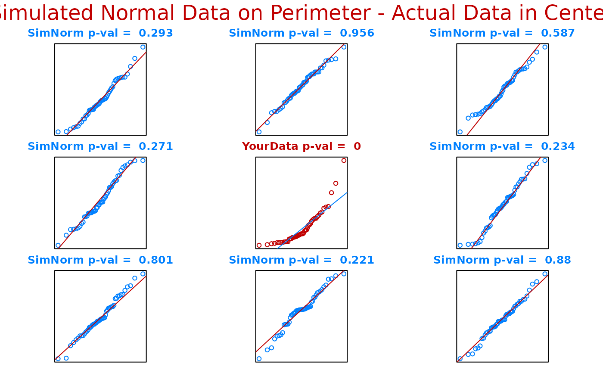

Q-Q plots of randomly generated normal data of the same size as the tested data are generated and ploted on the perimeter of the graph while a Q-Q plot of the actual data is depicted in the center of the graph.
ntester(actual.data)
| actual.data | a numeric vector. Missing and infinite values are
allowed, but are ignored in the calculation. The length of
|
|---|
Q-Q plots of randomly generated normal data of the same size as the tested data are generated and ploted on the perimeter of the graph sheet while a Q-Q plot of the actual data is depicted in the center of the graph. The p-values are calculated form the Shapiro-Wilk W-statistic. Function will only work on numeric vectors containing less than or equal to 5000 observations.
Shapiro, S.S. and Wilk, M.B. (1965). An analysis of variance test for normality (complete samples). Biometrika 52 : 591-611.
ntester(rexp(50,1))# Q-Q plot of random exponential data in center plot # surrounded by 8 Q-Q plots of randomly generated # standard normal data of size 50.